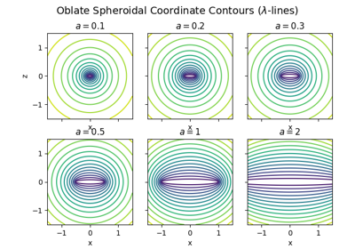
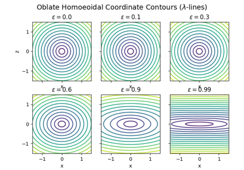

Core Modules: Coordinate Systems#
This gallery highlights examples built around the coordinates module, PyMetric’s foundation
for defining and working with structured coordinate systems.
The coordinates module provides a flexible API for defining Cartesian,
polar, cylindrical, spherical, and general curvilinear systems,
as well as custom user-defined coordinates. These examples showcase how to:
Instantiate and explore predefined coordinate systems,
Evaluate coordinate transforms and Jacobians,
Work with symbolic metrics and basis vectors,
Integrate coordinate systems into grid construction and field definitions.
Whether you’re visualizing a spherical metric or customizing an orthogonal system for a simulation, these examples serve as practical guides to mastering the geometry backbone of PyMetric.
Hint
For in-depth user documentation, see Coordinate Systems: General Info.

Oblate Spheroidal Coordinates: Effect of Eccentricity

Oblate Homoeoidal Coordinates: Effect of Eccentricity